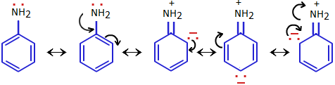
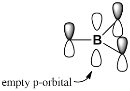
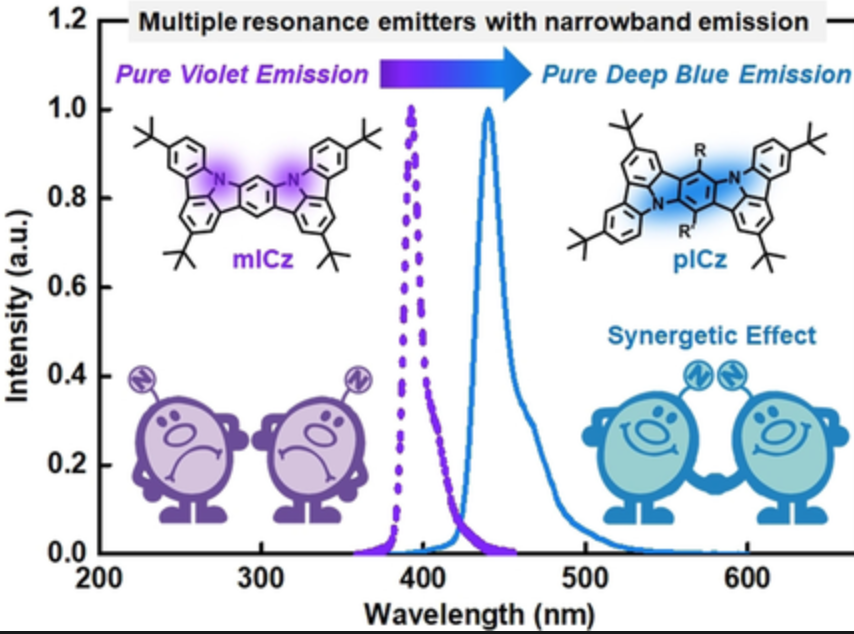
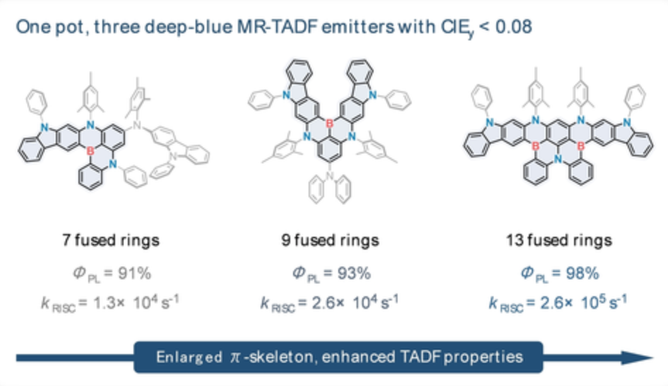

- It is known that when electron-donating group (EDG) or electron-withdrawing group (EWG) is attached to a phenyl ring, the ortho- & para-positons to the functional group (FG) on the phenyl ring would be electron-rich or electron-poor due to the "resonance"


- In the case of v-DABNA, nitrogen atoms function as the EDG because of the lone-pair electrons, while boron atoms as the EWG due to the empty p-orbital

The "+" and "-" signs shown above stand for the electron-poor & electron-rich positions, respectively
These two nitrogen/boron atoms are meta to each other, so that the ortho- & para-positions are overlapped, which make these positions more electron-rich/poor than the case with only one nitrogen/boron atom
N is ortho/para to B. As a result, the electron-rich & poor positions are next to each other (alternating pattern), which is responsible for many favorable optical properties (e.g., narrowband emission, small Stokes shift)
- Only with EDG, narrowband emission could also be achieved with: 1) rigid core; 2) nitrogen atoms meta to each other (as mICz shown below)

pICz (N-para-N) shows broader & greener emission than mICz (N-meta-N), but it is difficult to compare their FWHM values in eV based on the above image
doi.org/10.1002/anie.202017328
- Based on the above-mentioned design rules & various steric shielding methods, promising FLUO candidates (blue-shift the emission from PHO) could be designed & potentially achieved (relevant literature shown below)

doi.org/10.1002/anie.202201588